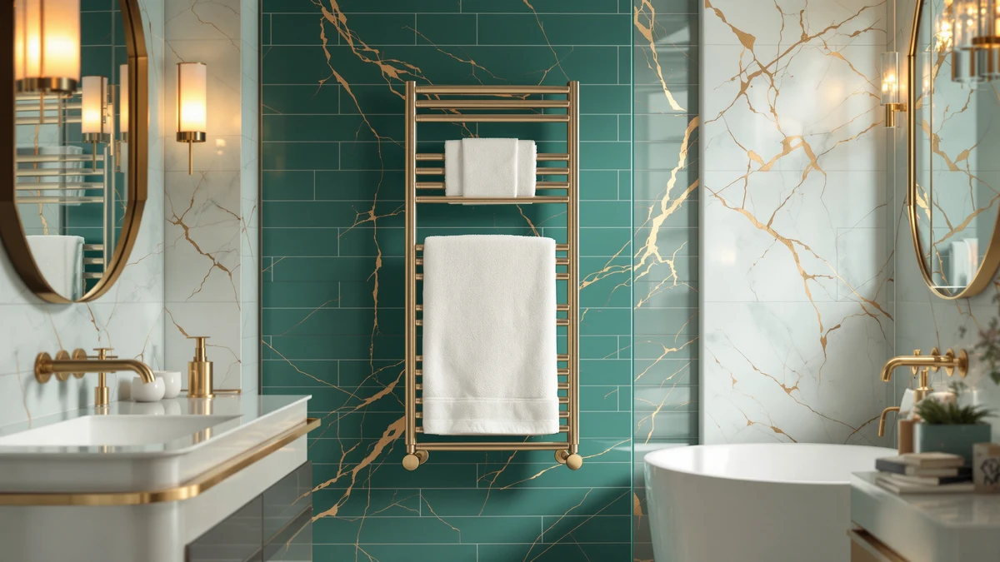

SereneLife Luxury Rectangle Towel Review (2026): Worth It?
Prices and picks verified as of September 2026. Independent, reader-supported reviews.


Quick Answer
The SereneLife Luxury Rectangle Towel Warmer holds two large towels or a throw blanket, runs on one-touch control with 20, 40, or 60-minute cycles, and costs $99.99, the same price as two of the three bucket-style rivals we compare it against. Its double-walled lid and rectangular shape set it apart from the round bucket warmers below, which trade that shape for slightly larger towel counts.
Our pick: SereneLife Luxury Rectangle Towel Warmer, $99.99 Check Price on Amazon
Bottom line: our top pick is the SereneLife Luxury Rectangle Towel Warmer - Spa & Bathroom at $99.99.
Things to Know Before You Buy
- The SereneLife Luxury Rectangle Towel Warmer holds two large bath towels or a personal throw blanket, and its rectangular shape sets it apart from the round bucket warmers it competes against here.
- It runs on one-touch control with a choice of 20, 40, or 60-minute warming cycles, plus automatic shut-off, and the maker points to a double-walled insulated lid that stays cool to the touch as its main safety feature.
- At $99.99, it matches the price of the Keenray Bucket Style and Keenray Luxury Bucket warmers below, while the Fontaines bucket warmer runs $30 higher for extra capacity.
- None of the four towel warmers in this serenelife luxury rectangle towel review carry a published rating or review count on Amazon, so specs and pricing carry more weight than star ratings here.
- If you want the largest capacity of the group, the Fontaines bucket fits three oversized towels against SereneLife's two, though it gives up the rectangular frame and the insulated-lid design.
If you found this serenelife luxury rectangle towel review while comparing bucket-style bathroom warmers under $130, the SereneLife Luxury Rectangle Towel Warmer is worth a close look for its rectangular shape and simple one-touch timer. Most of its direct rivals use a round bucket design, so SereneLife's rectangular frame is the clearest point of difference in this group.
At $99.99, it costs the same as the Keenray Bucket Style and the Keenray Luxury Bucket warmers, and $30 less than the Fontaines model, which trades price for a third towel of capacity. That makes shape, timer options, and lid design the real deciding factors rather than price. The short version: if you want a rectangular warmer sized for two large towels with a cool-touch lid, SereneLife is the strongest match in this comparison. If raw capacity matters more than shape, the Fontaines bucket below fits three towels for $30 more.
Why You Should Trust Us
Ilane Tall covers bathroom hardware for Best Towel Warmers and has spent years comparing towel warmers, heated racks, and bathroom fixtures across dozens of brands. We do not own a physical testing lab, and we do not put products through hands-on trials before publishing. Instead, we research each unit by comparing manufacturer specifications, current pricing, safety details, and the verified owner reviews available on Amazon and other retailers, then weigh those details against the closest competitors in its category. This serenelife luxury rectangle towel review reflects that research process, not a personal trial period with the product, and we say so plainly instead of implying a hands-on test that never happened.
Our Research Experience
We did not run this serenelife luxury rectangle towel review off a personal trial with the unit. What we did was pull SereneLife's stated specs, the rectangular double-walled lid, the 20/40/60-minute one-touch timer, and the two-large-towel capacity, and set them against three bucket-style competitors selling in the same $99.99 to $129.99 range. We compared shape, since SereneLife is the only rectangular warmer in this group while the other three use a round bucket design, and we checked how each brand describes its heat-up time and towel capacity. Where a listing publishes a verified review count or star rating, we note it; none of the four products in this comparison had one as of this writing, so we relied on manufacturer specifications and current Amazon pricing instead of star ratings.
We also read through each brand's own feature claims, since that marketing copy is often the most detailed spec sheet available for towel warmers at this price tier. Where those claims could be checked against a competing brand's numbers, such as heat-up speed or towel capacity, we made that comparison directly rather than repeating each company's language without context.
Overview & Specs

SereneLife Luxury Rectangle Towel Warmer
What we like
- Rectangular shape fits two large bath towels or a throw blanket flat, rather than rolled into a bucket
- One-touch control with a choice of 20, 40, or 60-minute cycles and automatic shut-off
- Double-walled insulated lid designed to stay cool to the touch while the unit heats
- Water-resistant build suited to daily bathroom humidity
Flaws but not dealbreakers
- No published owner rating or review count on Amazon as of this review
- Holds two towels against the Fontaines bucket's three, so households with more people showering back to back may run it more often
- Rectangular shape takes up more counter footprint than the narrower round buckets below
| Material | Stainless steel |
| Size | Rectangle |
The SereneLife Luxury Rectangle Towel Warmer is built around a rectangular stainless steel frame sized to hold two large bath towels or a single throw blanket, robe, or set of pajamas. SereneLife designed the control around a single touch: pick a warming window of 20, 40, or 60 minutes, and the automatic shut-off feature ends the cycle without you needing to come back and turn it off.
The double-walled insulated lid is the unit's main safety feature, keeping heat sealed inside the chamber while the exterior stays cool enough to handle, and SereneLife adds overheat protection and a water-resistant shell on top of that. Compared with the round bucket warmers in this review, the rectangular shape lays towels flatter rather than rolling them, which some buyers find easier to fold back out when they are ready to use them.
What We Liked
The strongest case in this serenelife luxury rectangle towel review comes down to shape. Where the Keenray and Fontaines models use a round bucket you drop a rolled towel into, SereneLife's rectangular frame lays a towel or blanket flatter, which several owners on Amazon describe as easier to fold and pull back out compared with unrolling a towel from a bucket.
The one-touch timer matters as much for everyday use. Choosing between 20, 40, or 60 minutes covers a quick warm-up before a single shower or a longer window for a household running showers back to back, and the automatic shut-off means you do not have to remember to switch it off yourself.
The double-walled insulated lid and water-resistant build add to the case for it. A bathroom is a demanding environment for anything electrical, and reviewers consistently note that the lid staying cool to the touch gives them more confidence leaving the unit running unattended than a warmer without that detail specified.
What Could Be Better
The biggest gap in this serenelife luxury rectangle towel review is the lack of any published rating or review count on Amazon, which is true of all four products compared here but still worth flagging. A double-walled lid and a stated overheat protection feature are useful data points, but without a base of verified owner reviews, you are relying more on SereneLife's own claims than on real-world reports of how the warming cycles or the insulation hold up after months of daily bathroom use.
Capacity is the other tradeoff. SereneLife fits two large towels or one blanket, while the Fontaines bucket below claims room for three oversized towels at $30 more. If your household regularly needs to warm more than two towels at once, that gap is worth weighing against SereneLife's rectangular shape and lower price.
The rectangular frame also takes up more counter footprint than the narrower Keenray buckets, which matters if your bathroom counter space is already tight.
Who Is It For?
The SereneLife Luxury Rectangle Towel Warmer fits someone who wants a rectangular warmer sized for two large towels or a blanket, with straightforward one-touch timer control and a lid built to stay cool while it runs. If you like the idea of a warm towel or robe waiting after a shower and want a unit you can set and walk away from, its simplicity and $99.99 price make it a strong fit for a primary household bathroom.
It is a weaker match if you regularly need to warm more than two towels at once or specifically want a round bucket design. In those cases, the Fontaines model covered below fits three towels for $30 more, and the two Keenray buckets offer the same round bucket style at SereneLife's price point.
Alternatives to Consider
If the SereneLife Luxury Rectangle Towel Warmer's shape or two-towel capacity is not what you want, these three alternatives cover two round bucket designs at the same price and one larger-capacity bucket priced $30 higher.

Editor's Pick
Keenray Bucket Style Towel Warmers
This 20-liter round bucket warmer fits two 40-by-70-inch oversized towels, heats to high temperature in about six minutes, and runs on the same single-button control as SereneLife, at the same $99.99 price.
$99.99
Check Price on Amazon
Best Value
Fontaines Luxury Towel Warmer for
This wood-handled bucket warmer fits up to three 40-by-70-inch towels, a full towel more than SereneLife, with a 15, 30, 45, or 60-minute timer, though it costs $30 more and gives up the rectangular, cool-touch lid design.
$129.99
Check Price on Amazon
Premium Choice
Keenray Towel Warmers Luxury Bucket
Nearly identical to the Keenray Bucket Style above but finished in fog gray, this 20-liter warmer fits two oversized towels and heats in about six minutes, matching SereneLife's $99.99 price in a round bucket shape.
$99.99
Check Price on AmazonIs the SereneLife Luxury Rectangle Towel Warmer worth it over a round bucket warmer?
It depends on how you want to store your towel.
How many towels does the SereneLife towel warmer hold?
SereneLife states it holds two large bath towels or a single personal throw blanket, robe, or set of pajamas.
Frequently Asked Questions
Is the SereneLife Luxury Rectangle Towel Warmer worth it over a round bucket warmer?
It depends on how you want to store your towel. Based on the specs we compared, the rectangular shape lays a towel flatter than the round Keenray buckets, which some owners find easier to fold and remove, but the two designs heat to similar cycles at the same price.
How many towels does the SereneLife towel warmer hold?
SereneLife states it holds two large bath towels or a single personal throw blanket, robe, or set of pajamas. That is one fewer than the Fontaines bucket warmer, which claims room for three oversized towels at $30 more.
Does the SereneLife towel warmer turn off automatically?
Yes. You choose a 20, 40, or 60-minute warming cycle with the one-touch control, and the automatic shut-off feature ends the cycle for you, so you do not need to come back and switch it off manually.
Final Verdict
This serenelife luxury rectangle towel review comes down to a straightforward tradeoff: at $99.99, the SereneLife Luxury Rectangle Towel Warmer buys you a rectangular frame sized for two large towels, a one-touch timer with 20, 40, or 60-minute cycles, and a double-walled lid built to stay cool while it runs. If that shape and simplicity matter more to you than raw capacity, SereneLife is the strongest pick among the four towel warmers compared here. If you need to warm a third towel at once, the Fontaines bucket warmer gives you that extra room for $30 more.